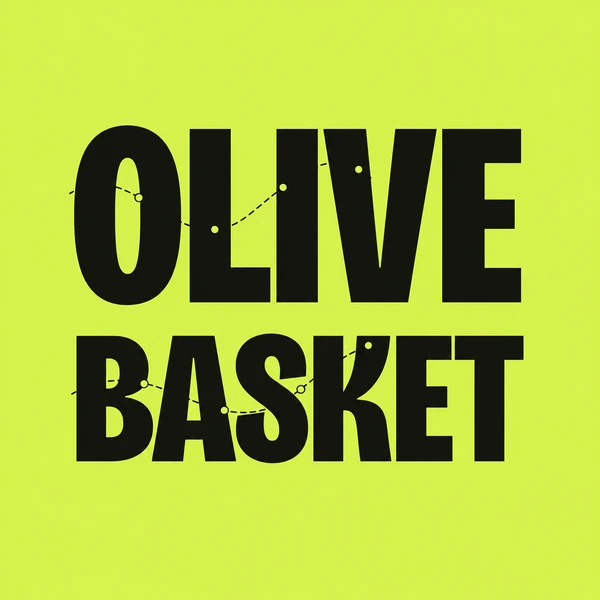

한 줄 담기
책에서, 영상에서, 누군가의 말에서.
마음에 걸린 문장을 바로 적어 둬요.

olive basket 이용하기도파민 말고, 올리브
마음에 걸린 문장을 담아 두면,
열 때마다 한 줄씩 다시 꺼내 주는 웹이에요.
우리에게 주어진 시간이 짧은 것이 아니라, 우리가 그 많은 시간을 허비하는 것이다.
우리에게 주어진 시간이 짧은 것이 아니라,— 세네카
우리가 그 많은 시간을 허비하는 것이다.
그만 넘기고, 한 줄 담기.
바구니에 올리브를 담듯,
마음에 문장을 담아요.
올리브바스켓이 하는 일WHAT IT DOES
책에서, 영상에서, 누군가의 말에서.
마음에 걸린 문장을 바로 적어 둬요.
오래 붙잡고 싶은 문장엔 별 셋.
별이 많을수록 더 자주 만나요.
담아 둔 문장이 한 줄씩 무작위로.
잊을 만하면 다시 찾아와요.
로그인 한 번이면 폰에서도 PC에서도
같은 문장이 그대로 있어요.
책에서, 영상에서, 누군가의 말에서.
마음에 걸린 문장을 적어 둬요.
오래 붙잡고 싶은 문장일수록 별 셋.
별이 많을수록 더 자주 만나요.
완전랜덤 · 최근 올린 글 · 별표 · 짧은 글 · 긴 글.
오늘의 기분대로 보여 주는 방식을 바꿔요.
열 때마다 한 줄씩, 다른 하늘빛 위에서.
잊을 만하면 다시 와 줘요.
보여 주는 방식 다섯 가지VIEW MODES
한 바퀴를 다 돌 때까지 같은 문장은 다시 나오지 않아요.
새로 담은 문장일수록 더 자주. 아직 손에 익지 않았으니까.
별 셋은 별 하나보다 세 배 자주 찾아와요.
엘리베이터 기다리는 3초에도, 짧고 굵게.
천천히 곱씹고 싶은 밤에는 긴 문장부터.
DAY 1
하루 한 줄이면,
한 달에 서른 개의 문장.
일 년이면 365개의 문장이
나를 만들어요.
어느새, 자라 있는 나를 발견하게 될 거예요.
웹으로 열고, 폰에 설치INSTALL
올리브바스켓은 앱스토어에서 받는 앱이 아니라 웹이에요.
폰 브라우저로 접속해서 홈 화면에 추가만 누르면, 아이콘 하나로 바로 열려요.
Safari로 olivebasket.plators.com 접속
아래쪽 공유 버튼 누르기
홈 화면에 추가 누르기
Chrome · Safari · Brave로 접속
브라우저 메뉴(⋮) 누르기
홈 화면에 추가 또는 설치